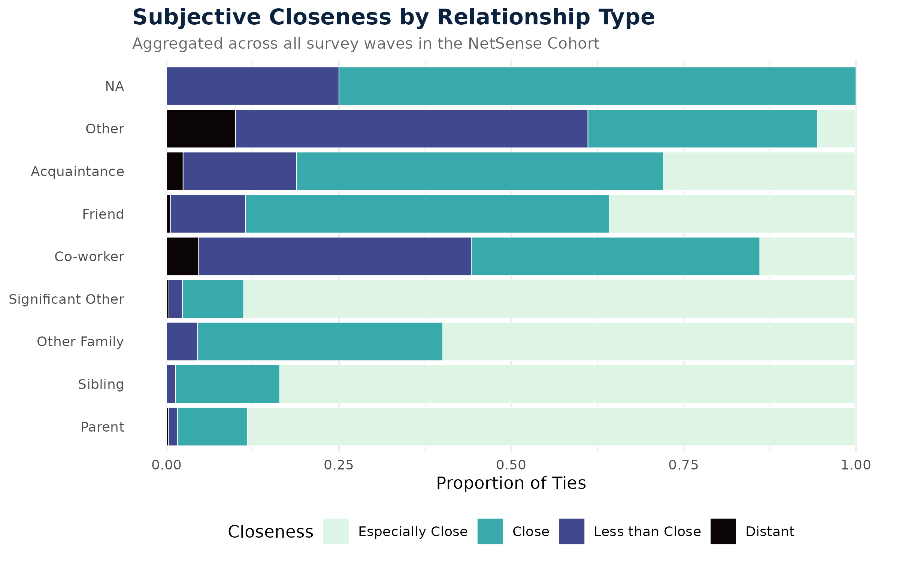
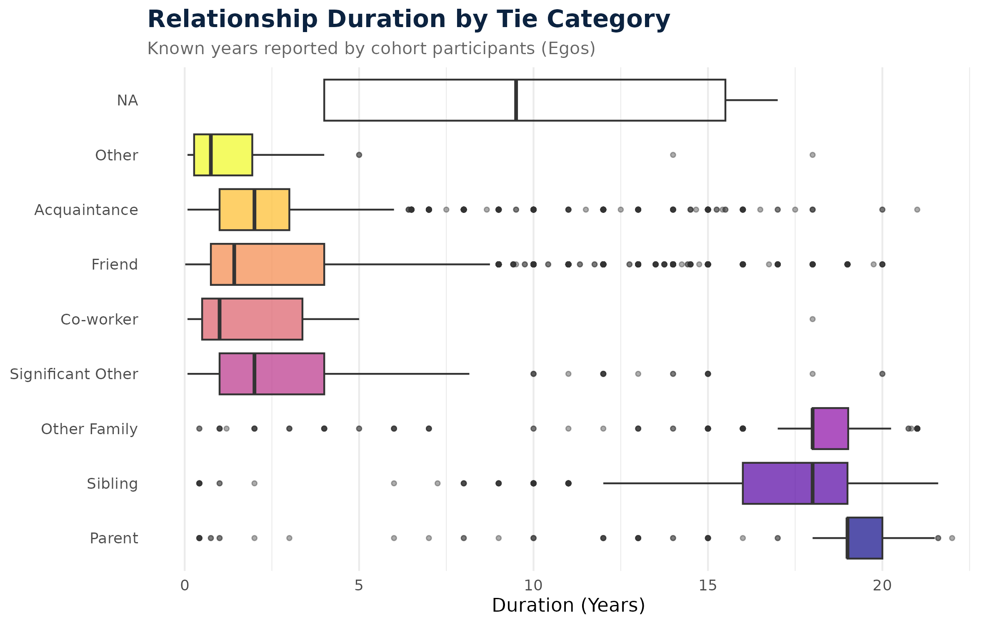
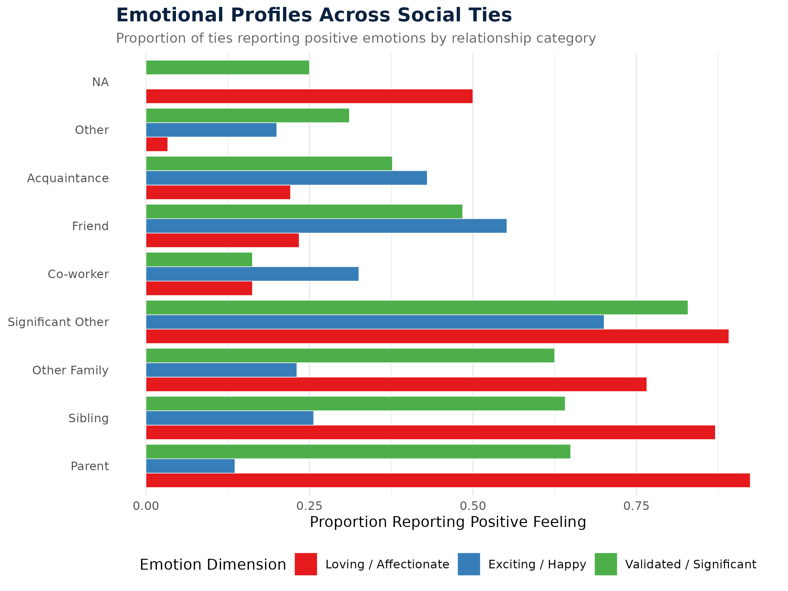

This section describes the dyadic social network surveys and weekly aggregated network metrics. You can download the complete datasets and survey instruments below:
Weekly Aggregated Metrics: Located in Data/weekly_aggregated_metrics/ (Contains open .csv files tracking participant indegrees, outdegrees, and text/voice communication inflow and outflow across academic weeks).
The network survey asked students to nominate their peers and answer detailed questions about their relationship with each peer. These nominations represent directed ties between a nominating ego (sender) and a nominated alter (receiver).
1.1 Programmatic Consolidation
Originally, the network surveys were scattered across 9 separate Stata .dta files (representing Wave 1 through Wave 8, including supplementary entry Wave 7.2).
A custom R consolidation script (Code/consolidate_network_surveys.R) was engineered to: 1. Parse the wave identifiers from the file names. 2. Programmatically drop sensitive identifying information (such as altername and receiver_string). 3. Strip wave-specific variable suffixes (e.g., closeness_1, closeness_75, closeness_8 are all renamed to closeness). 4. Harmonize variable types across waves to handle type conflicts safely. 5. Combine all observations into a single longitudinal panel dataset.
1.2 Nominations by Wave
Below is an interactive count of dyadic ties (nominations) captured in each wave of the longitudinal panel.
Interaction Contexts (socialcontext*): Where they typically interact (e.g. socialcontextDorm, socialcontextInclass, socialcontextClubteam, socialcontextInternet).
Shared Activities (activitiesact*, sameactivities*): Activities they do together, such as studying, playing sports, partying, or talking about personal problems.
1.4 Descriptive Relational Visualizations
To help visualize how these social ties and emotional dimensions vary across different relationship categories, the consolidated panel was used to generate several standardized profile figures.
1.4.1 Emotional Closeness by Relationship Type
The figure below illustrates the proportion of emotional closeness levels reported within each relationship category. For instance, parents and significant others dominate the “Especially Close” tier, while acquaintances and coworkers represent more “Distant” or “Less than Close” ties.

Figure 1: Subjective Closeness Profiles by Relationship Type
1.4.2 Relationship Duration
The boxplot below shows the distribution of relationship duration in years across different categories. Naturally, family relationships (parents and siblings) exhibit the longest durations, while friendships and classmate acquaintances reflect shorter, college-coincident spans.

Figure 2: Relationship Durations Across Categories
1.4.3 Emotional Profiles of Social Ties
The figure below highlights the proportion of ties that are characterized by specific positive emotions (loving, exciting, or validating) across relationship types. Strong ties (romantic partners and family members) exhibit a rich emotional profile with high rates of all three dimensions.

Figure 3: Proportions of Positive Emotions Felt in Relationships